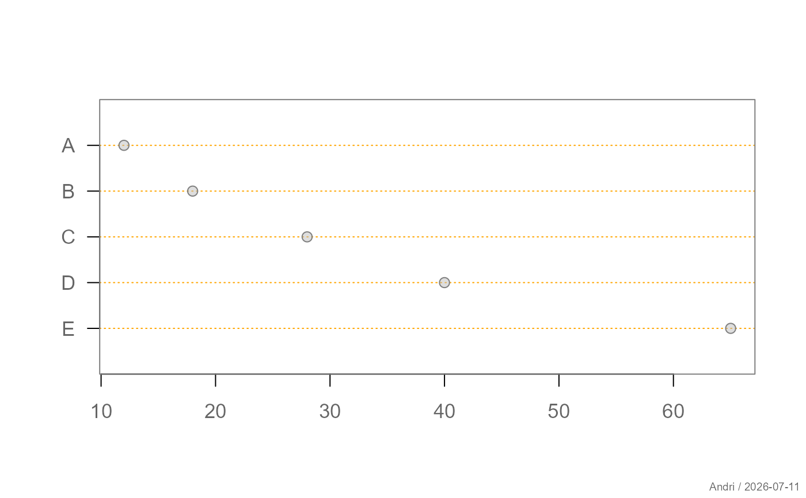
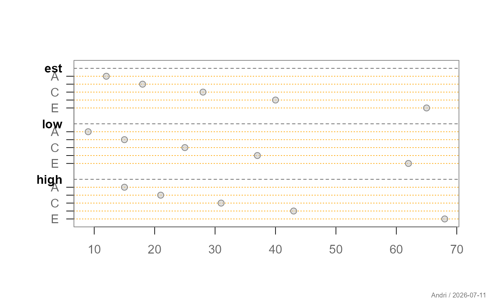
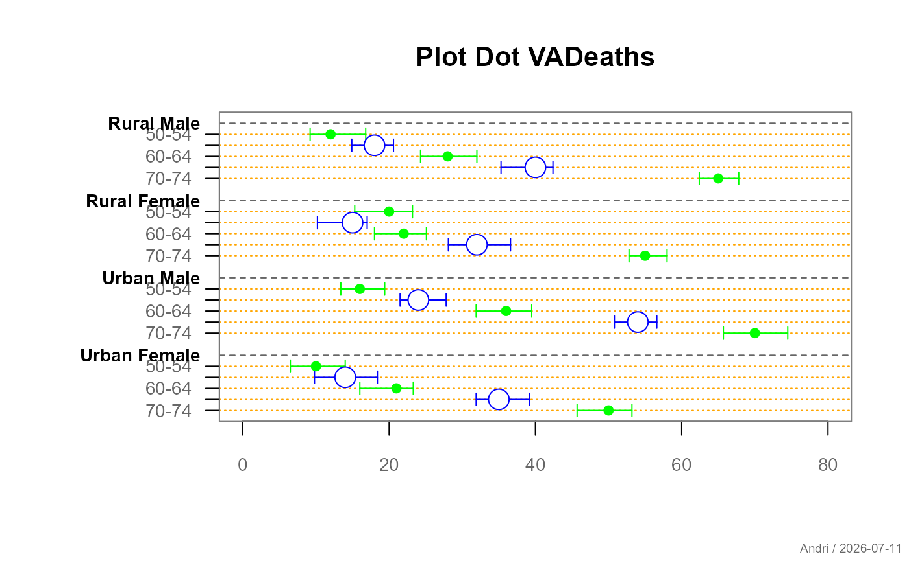
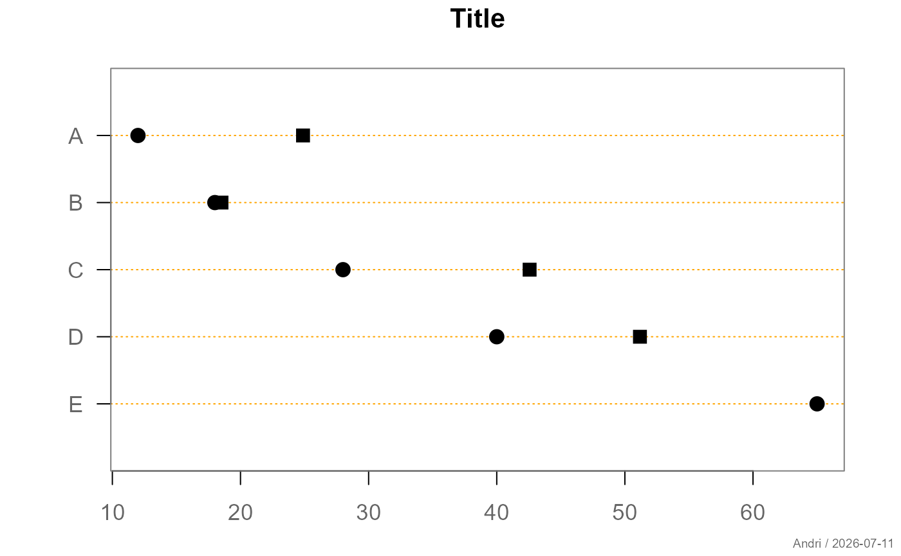

Draws a dot plot for numeric values with optional confidence intervals.
The function accepts vectors, matrices, or 3-dimensional arrays. Internally
the data are normalized to an array of dimension
items × (est, low, high) × groups.
Usage
plotDot(
x,
items = NULL,
groups = NULL,
main = NULL,
xlim = NULL,
gap = 1,
axes = TRUE,
xax = NULL,
box = .useTheme,
grid = .useTheme,
pch = .useTheme,
...
)Arguments
- x
Numeric data. Can be
a numeric vector (estimates only),
a matrix with 1 column (estimates) or 3 columns (estimate, lower, upper),
a 3D array of dimension
items × (est, low, high) × groups.
- items
Optional labels for the items (rows). Defaults to
dimnames(x)[[1]]if available.- groups
Optional group labels. Defaults to
dimnames(x)[[3]]if present.- main
Main title of the plot.
- xlim
Limits for the horizontal axis.
- gap
Vertical spacing between groups.
- axes
Logical; if
TRUEaxes are drawn.- xax
Optional specification of the x-axis. Passed to (the internal function)
.drawAxis.- box
Controls drawing of the plot box.
.useTheme(default) resolves togetTheme()$box.TRUE/FALSE/NA, or a named list, as forbox.- grid
Controls drawing of the horizontal item/group grid lines.
.useTheme(default) follows whether the active theme's grid section is enabled (getTheme()$grid); the line style itself (color/lty) staysplotDot's own distinctive look unless overridden.TRUE/FALSE/NA, or a named list, as for.drawDotGrid()(internal).- pch
Plotting symbol specification for the points.
.useTheme(default) resolves togetTheme()$points(pch/col/bg/cex). May also be a single value or a list of graphical parameters passed topoints.- ...
Additional graphical parameters passed to
parvia.applyParFromDots().
Value
Invisibly returns a list with the vertical layout positions used in the plot:
ypospositions of items,group_ypositions of group labels,sep_ypositions of group separator lines.
Details
If lower and upper bounds are supplied, horizontal confidence intervals are drawn with capped ends. Items are arranged vertically and may optionally be grouped.
Graphical defaults for box, grid, and pch are drawn
from the active theme (see getTheme/setTheme)
when left at their default value. Values supplied as arguments take
precedence over theme settings.
See also
Other plot.univariate:
plotArea(),
plotBar(),
plotBox(),
plotCatDist(),
plotDens(),
plotDensBox(),
plotECDF(),
plotFdist(),
plotLines(),
plotQQ(),
plotViolin()
Examples
# simple dot plot
plotDot(c(12, 18, 28, 40, 65), items = LETTERS[1:5])

# dot plot with confidence intervals
est <- c(12, 18, 28, 40, 65)
low <- est - 3
high <- est + 3
plotDot(cbind(est, low, high), items = LETTERS[1:5])

dat <- structure(c(12, 18, 28, 40, 65, 9.2, 14.9, 24.3, 35.3, 62.4,
16.8, 20.6, 32, 42.4, 67.8, 20, 15, 22, 32, 55, 15.3, 10.2, 18,
28.1, 52.8, 23.2, 17, 25.1, 36.6, 58, 16, 24, 36, 54, 70, 13.4,
21.5, 31.9, 50.8, 65.7, 19.4, 27.8, 39.5, 56.6, 74.5, 10, 14,
21, 35, 50, 6.5, 9.8, 16, 31.9, 45.7, 14, 18.4, 23.3, 39.2, 53.2
), dim = c(5L, 3L, 4L))
plotDot(
dat, main="Plot Dot VADeaths", cex.axis=0.8,
items = c("50-54","55-59","60-64","65-69","70-74"),
groups = c("Rural Male","Rural Female","Urban Male","Urban Female"),
xlim = c(0,80),
pch = list(pch=c(16, 21), col= c("green","blue"),
cex=c(1,2), bg="white")
)

ypos <- plotDot(c(12,18,28,40,65), # groups="",
items=LETTERS[1:5], pch=list(cex=1.5), main="Title")
points(c(12,18,28,40,65) + runif(n = 5)*15, y=unlist(ypos$ypos),
cex=1.5, pch=15)
